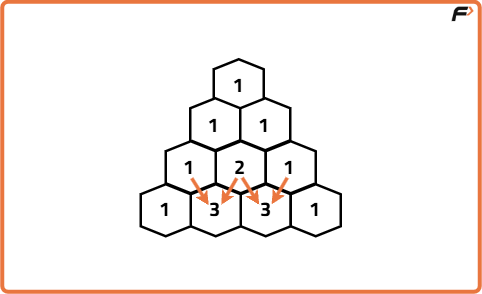
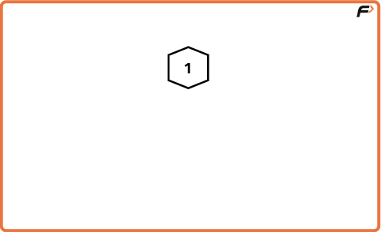
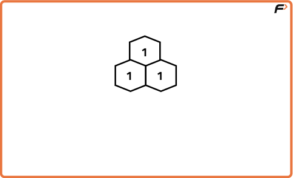
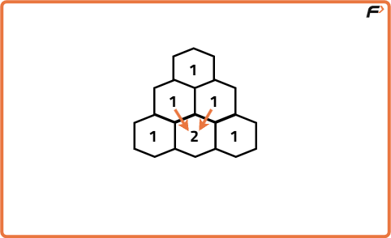

Program to generate Pascal's Triangle
Problem Statement: Write a program to generate Pascal's triangle. In Pascal’s triangle, each number is the sum of the two numbers directly above it as shown in the figure below:

Examples
Input: N = 5, r = 5, c = 3 Output: Element at position (r, c): 6 N-th row of Pascal’s triangle: 1 4 6 4 1 First n rows of Pascal’s triangle: 1 1 1 1 2 1 1 3 3 1 1 4 6 4 1 Explanation: Pascal triangle for first 5 rows is shown above. Input: N = 1, r = 1, c = 1 Output: Element at position (r, c): 1 N-th row of Pascal’s triangle: 1 First n rows of Pascal’s triangle: 1 Explanation: N = 1 is the base case fof a pascal's triangle.
Disclaimer: Here is the practice link to help you assess your knowledge better. It's highly recommend trying to solve it before looking at the solution.
Approach - 1
Algorithm
To generate the entire Pascal’s Triangle for the first N rows, we can start with the first row containing a single 1 and iteratively build each subsequent row using the property that every element (except the first and last) is the sum of the two elements directly above it from the previous row. The first and last elements of each row are always 1. By storing the previous row, we can calculate the next row easily. This process continues until we have constructed all N rows, resulting in the complete Pascal’s Triangle structure.



Code
#include <bits/stdc++.h>
using namespace std;
// Class containing Pascal's Triangle generation logic
class Solution {
public:
// Function to generate Pascal's Triangle up to numRows
vector<vector<int>> generate(int numRows) {
// Result vector to hold all rows
vector<vector<int>> triangle;
// Loop for each row
for (int i = 0; i < numRows; i++) {
// Create a row with size (i+1) and initialize all elements to 1
vector<int> row(i + 1, 1);
// Fill elements from index 1 to i-1 (middle values)
for (int j = 1; j < i; j++) {
// Each element = sum of two elements above it
row[j] = triangle[i - 1][j - 1] + triangle[i - 1][j];
}
// Add current row to the triangle
triangle.push_back(row);
}
return triangle;
}
};
int main() {
Solution obj;
int n = 5;
// Generate and print Pascal's Triangle
vector<vector<int>> result = obj.generate(n);
for (auto &row : result) {
for (auto &val : row) cout << val << " ";
cout << endl;
}
}
Complexity Analysis
Time Complexity: O(N^2), we generate all the elements in first N rows sequentially one by one.Space Complexity: O(N^2), additional space used for storing the entire pascal triangle.
Approach - 2
Algorithm
To print the Nth row of the pascal triangle we can take advantage of the relationship between Nth element and binomial coefficients.
In a pascal's triangle, the Nth row contains the binomial coefficients C(N-1, 0), C(N-1, 1) and so on till C(N-1, N-1). Thus we can simply calculate all these values to return the Nth row of pascal triangle.
Instead of computing full factorials, we can start with the first value as 1, and use the relation C(n, k) = C(n, k−1) × (n−k+1) / k to compute the next value from the previous one in constant time.
In a pascal's triangle, the Nth row contains the binomial coefficients C(N-1, 0), C(N-1, 1) and so on till C(N-1, N-1). Thus we can simply calculate all these values to return the Nth row of pascal triangle.
Instead of computing full factorials, we can start with the first value as 1, and use the relation C(n, k) = C(n, k−1) × (n−k+1) / k to compute the next value from the previous one in constant time.
Code
#include <bits/stdc++.h>
using namespace std;
// Class containing Pascal's Triangle row generation logic
class Solution {
public:
// Function to generate the Nth row of Pascal's Triangle
vector<long long> getNthRow(int N) {
// Result vector to store the row
vector<long long> row;
// First value of the row is always 1
long long val = 1;
row.push_back(val);
// Compute remaining values using the relation:
// C(n, k) = C(n, k-1) * (n-k) / k
for (int k = 1; k < N; k++) {
val = val * (N - k) / k;
row.push_back(val);
}
return row;
}
};
int main() {
int N = 5; // Example: 5th row
Solution sol;
vector<long long> result = sol.getNthRow(N);
// Print the row
for (auto num : result) {
cout << num << " ";
}
return 0;
}
Complexity Analysis
Time Complexity: O(N), we iterate N times to compute each element of the row in O(1) time using the direct relation.Space Complexity: O(N), additional space used for storing the Nth row.
Approach - 3
Algorithm
To find the element at the coordinates (R,C) where R is the row number and C is the Column number, we can simply simulate the generation of pascal's triangle for R rows. In Pascal’s Triangle, the element at row R and column C corresponds to the binomial coefficient (r-1)C(c-1). To calculate this binomial coefficient, we can simply apply the formula of binomial coefficient i.e. (r-1)!/(c-1)!(r-c)!.
Instead of computing full factorials (which can overflow and be slow), we can multiply and divide in a loop to compute the coefficient efficiently.
Instead of computing full factorials (which can overflow and be slow), we can multiply and divide in a loop to compute the coefficient efficiently.
Code
#include <bits/stdc++.h>
using namespace std;
// Solution class to find the (r, c) element of Pascal's Triangle
class Solution {
public:
// Function to compute binomial coefficient (nCr)
long long findPascalElement(int r, int c) {
// Element is C(r-1, c-1)
int n = r - 1;
int k = c - 1;
long long result = 1;
// Compute C(n, k) using iterative formula
for (int i = 0; i < k; i++) {
result *= (n - i);
result /= (i + 1);
}
return result;
}
};
int main() {
Solution sol;
int r = 5, c = 3;
cout << sol.findPascalElement(r, c);
return 0;
}
Complexity Analysis
Time Complexity: O(min(c,r−c)), The loop runs for min(c−1,r−c) iterations because binomial coefficients are symmetric.Space Complexity: O(1), constant additional space is used.